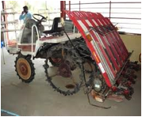
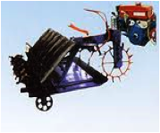
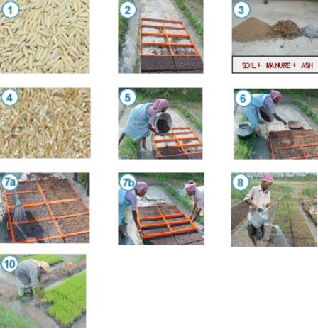

FMP 211 :: Lecture 10 :: PADDY TRANSPLANTERS, TYPES, WORKING PRINCIPLE, FIELD AND NURSERY REQUIREMENTS

Transplanter is equipment used for transplanting mat type paddy seedlings in the main field. It is suitable for all types of paddy varieties grown by transplanting. Both manually operated and mechanically operated transplanters are available. Before transplanting, the field has to be puddled well and allowed for one or two days for consolidation of soil so that the machine can work with out sinkage
MANUAL RICE PLANTER
The machine consists of a seedling tray, six numbers of forks, handle and skids. By pressing the handle, the forks pick-up the seedlings and plant them in 6 rows. For every stroke of the handle the seedling tray moves sideways for uniform picking of seedlings by the forks. The operator has to pull the machine after finishing planting in a row. The row to row spacing is 200 mm. Plant to plant spacing can be set as per space recommendation by pulling the unit manually to the required distance. It can cover 0.25 ha/ day. Two men labour are required one for pulling the unit and another for transporting the mat seedlings. It saves time and money when compared to manual transplanting
Six row manual rice transplanter
SELF PROPELLED PADDY TRANSPLANTER
The self propelled paddy transplanter consists of (i) Air cooled gasoline engine (ii) Main clutch (iii) Running clutch (iv) Planting clutch (v) Seedling table (vi) Float (vii) Star wheel (viii) Accelerator lever (ix) Ground wheel (x) Handle (xi) Four bar linkage mechanism etc. The planter is powered by a 1.2-1,8 HP petrol engine.
Operation
SELF PROPELLED PADDY TRANSPLANTER (Video) |
The mat seedlings of age 15-20 days are used for machine planting. Mats are placed on the seedling table. After starting the engine, the running clutch and planting clutch are operated. Four bar linkage mechanism picks up 3 or 4 seedlings in each fork at a time from the mat and plant them in the puddled soil. A fiber glass float supports the machine on the soil while working in the field. Two ground wheels driven by the gear box moves the unit. There is a marker which demarcates the transplanting width while in operation. The machine maintains a row to row spacing of 28 cm to 30 cm and plant to plant spacing of 14 to 16 cm. The planting capacity of the machine is about 0.05 to 0.1 hectare per hour Power requirement is about 1.2 to 1.8 HP petrol engine. It saves time and money when compared to manual transplanting.
Drive for four bar mechanism
Power from the engine goes to the main clutch from where it is divided into two routes, one goes to planting clutch and the other goes to running clutch. Unless the planting clutch is operated , the four bar linkage mechanism does not work.
|  |  |
| Self propelled rice transplanter | |
| Self Propelled Rice Transplanter in Operation | ||
MODIFIED MAT NURSERY FOR MACHINE PLANTING
A modified mat nursery establishes seedlings in a layer of soil mix, arranged on a firm surface. Seedlings are ready for planting within 15-20 days after seeding (DAS). The modified mat nursery uses less land, can be installed closer to the house than traditional field nurseries, and uses less labor for both transporting seedling mats and replanting. As a result, root damage is minimal while separating seedlings.
Establishing a Modified Mat Nursery
1. Seed: To plant 1 ha (with 2 seedlings/hill at 20 X 20 cm spacing), use 18-25 kg good quality seeds (i.e., >80% germination and establishment).: Good seeds result in lower seed rate, more uniform germination, vigorous seedlings, less replanting, fewer weeds, and 5-20% higher yields.
2. Nursery area: Prepare 100 m2 nursery for each 1 ha to be planted. Select a level area near the house and/or a water source. If area is not sufficiently compacted, then spread a plastic sheet or banana leaves on the marked area to prevent roots growing into soil.
3. Soil mixture: Four (4) m3 of soil mix is needed for each 100 m2 of nursery. Mix 70- 80% soil + 15-20% well-decomposed organic manure + 5-10% rice hull or rice hull ash. Incorporate around 20 kg N/ha (1.5 kg powdered di-ammonium phosphate or 2.0 kg 15-15-15 powdered NPK fertilizer for every 100 m2 of nursery area).
4. Pre-germinating seed: Soak the seeds for 24 h (some varieties may need longer to bud). Drain and incubate (cover and keep moist) the soaked seeds for 24 h. In this time, the seeds sprout (bud) and the first seed root grows to 2-3 mm long.
5. Laying the soil mixture: Place a wooden frame of 0.5 m long, 1 m wide and 4-cm deep divided into 4 equal segments on the plastic sheet or banana leaves. Fill the frame almost to the top with the soil mixture. Cover the seed with soil mix and wet.
6. Sowing: Sow the pre-germinated seeds uniformly and cover them with a thin layer of dry soil. (Approximately 1 seed/cm2)
7. Soaking the seedbed: (a) Sprinkle water immediately to soak the bed. (b) Remove the wooden frame and continue the process (i.e., fill soil mix-sow seed-cover seed-water) until the required nursery area is completed.
8. Watering: Water the nursery as needed to keep the soil moist. Protect the nursery from heavy rains for the first 5 days. If the nursery can be flooded then at 7 DAS, maintain a 1-cm water level around the mats. Drain the water 2 days before removing the seedling mats for transplanting
9. Fertilizer topdressing (optional): If temperature and water are adequate, but the seedlings show yellowing (N deficiency). Sprinkle seedlings with 0.5% urea (1.5 kg Urea in 300 l water/100 m2).m
10. Lifting seedling mats: Seedlings reach sufficient height for planting in 15-20 DAS. Lift the seedling mats and transport them to main field.

FIELD PREPARATION FOR RICE TRANSPLANTING
Plough the filed 20-25 cm deep using a mould board plough or wooden plough to expose the eggs of harmful insects, pests and rhizomes of weeds. Keep the field flooded or saturated with water. After two or three days, puddle the soil using a puddler three or four times with standing water and complete a week ahead of transplanting. Puddling helps to kill the weeds and buries them in puddle layer. The rate of germination of weeds is also reduced in subsequent growing period of crop. Puddling helps to create beneficial physical, biological and chemical conditions for the growth of rice plants. Soil surface is left in a more even condition. Apply uniformly half of nitrogen and total quantities of phosphorus and potash on drained surface at the time of last puddling and incorporate in the top 10-15 cm deep soil.
| Download this lecture as PDF here |